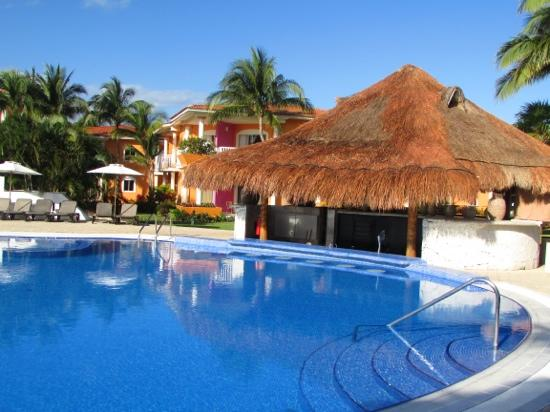

Each year millions of tourists from all over the globe flock to Riviera Maya to vacation. With it's sandy
beaches, clear water, and inviting atmosphere Riviera Maya is host to several all-inclusive resorts. I will now present
reviews on the three resorts which I have frequented.
A portion of resort options available in the Cancun area
Valentin Imperial Riviera Maya
First up is Valentin Imperial Riveira Maya where I visited in June of 2017 on a
couples trip. This resort has two humongous swimmimg pools separated by a waterfall
and they are referred to as 'The Main Pool' and then there is a smaller pool located behind a
block of rooms known as 'The Quiet Pool'. The great thing about the quiet pool is there was
waiter service! The resort kept it's temporary residents entertained with a schedule of (optional)
events. During my stay I went to The Michael Jackson (impersonator, in case anyone was wondering)
show, danced the night away every evening with The Imperial Band, and attended the Foam party which
is a staple at almost all of the resorts in the area.
Excursions off the resort that I participated in:
• Zip-lining
•Horseback Riding
•Snorkeling
Most Lasting Impression:
•The Pad Thai was amazing!
The foam party at Valentin!
Ocean Maya Royale
I visited Ocean Maya Royale in October of 2018 with my little sister on a bonding trip. This
resort is a good choice on the budget. It had a smaller pool but it was still equipped with a
swim-up bar and had the almost obligatory foam party. This resort did not have much by the way of
scheduled entertainment but it did have a bar that was open 24 hours in the lobby area.
It was at this resort that I met the most people from all over the world. It was amazing to me
to hear all of the different languages. I wish I could understand them all!
Excursions off the resort that I participated in:
•Zip-lining
•Swimming in the cenotes
Most Lasting Impression:
•No! I would not like to join or even hear more about your vacation club.

The inviting swim up bar at Ocean Maya Royale
Excellence Riviera Cancun
Needing to take a breather from reality for a moment, I chose Excellence Riviera Maya as
the resort for my first international solo adventure in October of 2019. This resort is regularly
tauted as being quiet and lowkey and it was exactly that. There was no foam party here (to show
you they mean business) but I did enjoy a rousing game of Bingo at the pool. The evening
entertainment was more so live shows that you would gather and watch at the outside theater
than interactive although there was one night with a silent party.
Since I was in the mood to pamper myself I went all out with a swim-up room complete with
drink service right to your patio! There was also a jetted hot tub on the patio which I put to good
use. You may think that a hot tub and Riviera Maya weather do not mix, but you would be incorrect.
Excursions off the resort that I participated in:
•Since I was solo and specifically on vacation to relax, I did not venture off
for any excursions. I did take a bike tour off the resort with staff and other guests.
Most Lasting Impression:
•Outdoor hot tub naps rock!
The view from one of the swim out rooms at ERC